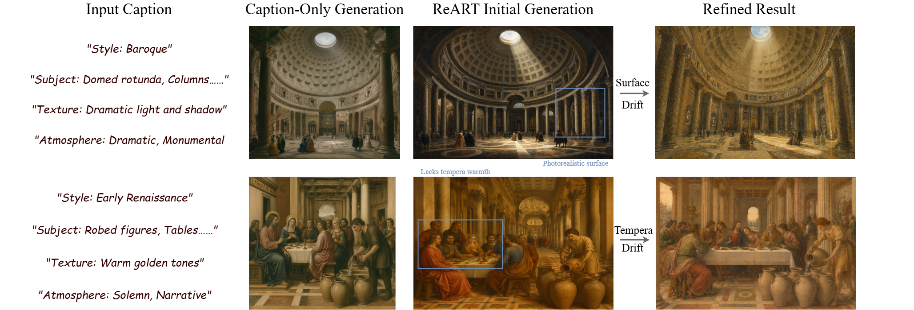
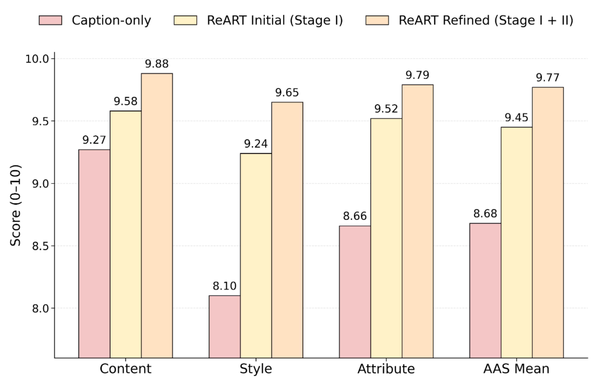

AffectiveArt Track 1
Input prompts combine content, style, and desired emotional state. Evaluation combines distributional quality via FID and alignment quality via AAS.
ACM Multimedia 2026 Grand Challenge · AffectiveArt Track 1
ReART grounds abstract affective prompts in concrete artistic references and repairs axis-specific alignment failures. It ranked 2nd overall in the AffectiveArt 2026 Grand Challenge Track 1 with a perfect AAS score.
1 Wangxuan Institute of Computer Technology, Peking
University
2 School of Computer Science, Wuhan University

Emotion-aware artistic image generation requires a model to satisfy semantic content, artistic style, and target emotion simultaneously. The key challenge is that artistic captions often conflate these axes into underspecified free-form text, making fine-grained visual attributes such as brushwork, composition, and tonal atmosphere difficult to ground concretely.
We present ReART, a reference-guided retrieval and refinement framework. ReART decomposes captions and artwork annotations into structured visual fields, performs field-wise retrieval from style-specific reference pools, and uses the retrieved references as role-specific visual evidence for initial synthesis.
For samples with low Attribute Alignment Score (AAS), ReART further diagnoses failed dimensions, constructs constrained repair plans, routes references by correction purpose, and performs targeted editing while preserving correctly generated regions. ReART ranked 2nd overall in the AffectiveArt 2026 Grand Challenge Track 1 with a perfect AAS score.
AffectiveArt Track 1 asks participants to generate artistic images from prompts that specify semantic content, artistic style, and target emotion. Success requires more than drawing the right objects: the generated artwork must express affect through brushwork, color, composition, line, light, and material surface.
Input prompts combine content, style, and desired emotional state. Evaluation combines distributional quality via FID and alignment quality via AAS.
EmoArt contains 132,664 artworks across 56 styles with structured annotations for content, brushwork, composition, color, line, light, emotion, and therapeutic potential.
Artistic prompts mix content, style, emotion, and visual attributes in one sentence, while text alone struggles to specify brushwork, material surface, composition, and tonal atmosphere.
ReART grounds each visual dimension in field-aligned references, then repairs only failed alignment axes under explicit preservation constraints.
ReART follows a compact two-stage pipeline: retrieve visual evidence for the prompt, then refine only the dimensions that fail alignment.


keep
Preserve correct regions.
fix
Name failed requirements.
avoid
Block visual drift.
priority
Order the edits.
Stage II converts the AAS diagnosis into constrained edit instructions: retain aligned content, repair the failed requirement, suppress new artifacts, and prioritize structural errors before style or atmosphere.
ReART ranked 2nd overall in the AffectiveArt 2026 Grand Challenge Track 1. The system achieved a perfect AAS score across content, style, and attribute alignment, demonstrating strong fine-grained prompt-image consistency.
| Rank | Team | Overall | FID | AAS | Content / Style / Attribute |
|---|---|---|---|---|---|
| 1 | USTC_PI_LAB_TEAM | 0.80 | 66.12 | 0.99 | 0.99 / 0.99 / 1.00 |
| 2 | EmoForge (Ours) | 0.78 | 77.47 | 1.00 | 1.00 / 1.00 / 1.00 |
| 3 | VIRlab | 0.78 | 75.56 | 0.99 | 0.98 / 0.99 / 0.99 |
| 4 | edaich | 0.77 | 78.59 | 0.99 | 0.98 / 0.99 / 0.99 |
Because the official hidden reference set and organizer-side evaluator are unavailable for controlled comparison, ReART is also evaluated on Local200, a local validation set sampled from EmoArt to cover the challenge styles. ReART achieves the best FID and AAS among the compared generation baselines.
| Method | FID | AAS | Content | Style | Attribute |
|---|---|---|---|---|---|
| FLUX.1-dev + IP-Adapter | 170.51 | 6.52 | 6.78 | 7.46 | 5.33 |
| Qwen-Image | 162.94 | 7.69 | 7.82 | 7.67 | 7.59 |
| HiDream-O1-Image | 156.33 | 7.65 | 8.06 | 7.95 | 6.94 |
| ReART (Ours) | 147.43 | 9.77 | 9.88 | 9.65 | 9.79 |

Captures the main subject, but often misses period-specific surface, linework, and affective tone.
Field-aligned references strengthen style identity and requested visual attributes.
Targeted repair corrects residual drift while preserving content and layout.
This work was supported by the grants from the National Natural Science Foundation of China 62372014 and Beijing Nova Program.
@misc{tang2026reart,
title = {ReART: Reference-Guided Retrieval and Refinement for Emotion-Aware Art Generation},
author = {Qianqian Tang and Jiayi Gao and Ting Lei and Yang Liu},
year = {2026},
eprint = {2608.22329},
archivePrefix = {arXiv},
primaryClass = {cs.CV},
url = {https://arxiv.org/abs/2608.22329}
}